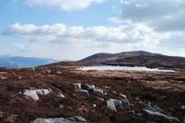

Culture
The Ring of Gullion has produced many storytellers down through the years, most notably Michael Murphy, John Campbell and Mickey Quinn. It is also famous for its Gaelic poets. Being 'walled-off' from the rest of Ireland meant that Irish lasted longer here than in other parts of eastern Ireland. Between 1650 and 1800, the best Irish poetry was being written in North Louth and the Ring of Gullion. This was when Irish poetry became modern, as it had to adapt to the end of patronage by the Gaelic lords O'Neills, O'Hanlons and McGuinnesses. Now, poems were composed celebrating and commiserating with the lives, loves and hates of the ordinary people. These poems and songs are still sung around the world anywhere Gaelic singers congregate.
About two hundred and fifty years ago, a man called Johnson of the Fews terrorised the local people. He had a vicious sidekick Cormac the Headcutter, whose name explains all. The locals had a saying "Jesus of Nazareth, King of the Jews, Save us from Johnson, King of the Fews".
There is a famous competition called The Bard of Armagh. The cottage of the original Bard of Armagh is in the Ring of Gullion.
Myths and legends abound. One concerns Fionn Mac Cumhail. Once, as a young man, he was on the summit of Slieve Gullion. The top was haunted by the Old Hag of Beara - the Cailleach Béara. She watched over the summit lake. Anyone who drank from the water was immediately turned into an old man and death came soon after. Anyway, Fionn decided to go for a swim. No sooner had he stripped off and plunged in than herself arrived and pronounced her fateful sentence. Fionn replied that he had not drunk any water, as he always swam with his mouth closed. "And surely some water went into your nose", she screeched triumphantly. "Whoever heard of anyone drinking with their nose". To this she had no answer. She left him young, but turned his hair grey and long so that he tripped over it constantly for the rest of his three-hundred-year life.
The first major poet from the area was Séamas Dall Mac Cuarta in 1647, just before Cromwell came. Blind from birth, the legend goes that he got lost as a wee baby and fell into a stream. He was rescued by a fairy who gave him the gift of poetry. However, such a story is attributed to many blind creative persons, such as Turlach O'Carolan, so it is probably apocryphal
During Penal Law times, the local Catholic population were not allowed worship in churches or houses. Usually a local large rock was the site for weekly mass. One such stone is Carrickinaffrin, a mile west of Forkill. Another place is near the top of the Glendesha Road, in the forest. About 200m inside this spooky landscape of silence broken by creaking trees, is a large stone, which now has a crucifix on top.
One of the most successful singing clubs in Ireland in the eighties was The Stray Leaf Folk Club in a shed at the back of O'Hanlon's Bar in Mullaghbane. There you'd be, sitting on an empty beer keg, surrounding by the best unaccompanied singers in both Ireland and Britain, singing in English, Irish, Ulster-Scots and Scots-Gaelic.
You'll be impressed by the amount of signs written in Irish, and sessions in local pubs!
— Cú ChulainnFamous Poets
- Séamas Dall Mac Cuarta
- Art Mac Cumhaigh
- Peadar Mac Giolla Fhiondain
- Peadar Ó Doirnín
- Art Mac Bionaid
- Molly Nic Giolla Fhiondain
Cities & Villages
- Bessbrook
- Camlough
- Forkill
- Jonesborough
- Lislea
- Meigh
- Mullaghbane
- Newry